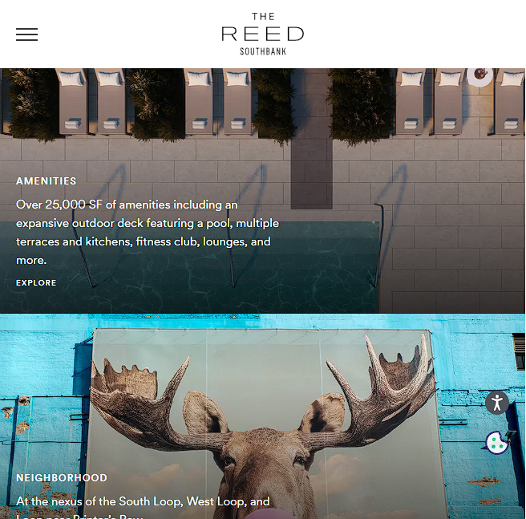
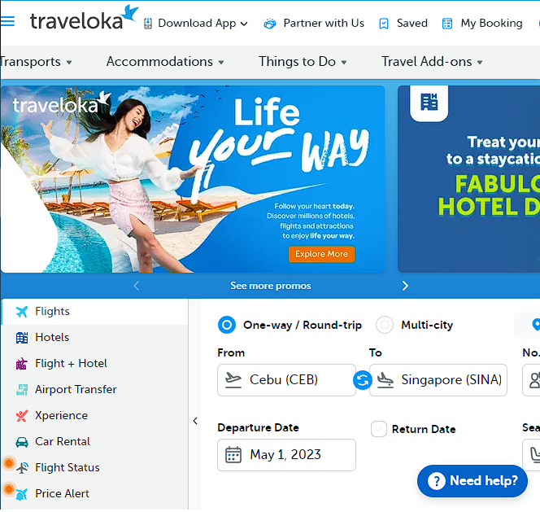
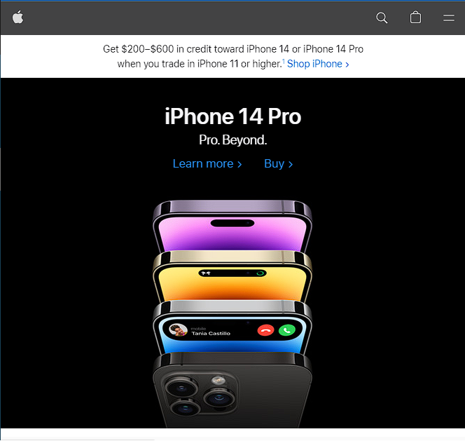

Design Principles Document
Jean Clyde C. Maala
Repetition
The Reed Southbank
thereedsouthbank.com This website demonstrates repetition principle in web design because it portrays consistency in the design and color of the website. As we can notice, the placement of the pictures are consistent and repetitive, allowing the website visitors to focus on what the owner of the website wants them to focus, which in this case is the beauty of their apartments. As what we all know, repetition principle in web designing is reusing the same elements, design and color scheme throughout the website and this site did exactly just that.
Rule of Thirds
Traveloka
traveloka.com According to designwebkit.com, "The Rule of Thirds web design technique is used for creating pleasing aesthetics and balance in images. It basically says that placing items of interest on the “thirds” of an image is more pleasing to the eye than centering or more other symmetrical approaches." (https://designwebkit.com/web-design/rule-of-thirds-web-design/). In this website, although what was placed in the center of the page isn't a picture or other web design elements, the rule of thirds still applies because the booking options were placed in the middle, giving it an emphasis of its importance in the website.
Contrast
Apple
apple.com Apple's website is one of the popular websites that portrays the contrast principle of web designing. As we visit the site, we can notice that they put more emphasis on their new product, which in this case is the iphone 14 by putting its big picture and very brief description using big fonts that stands out from the other design or feature of the website.